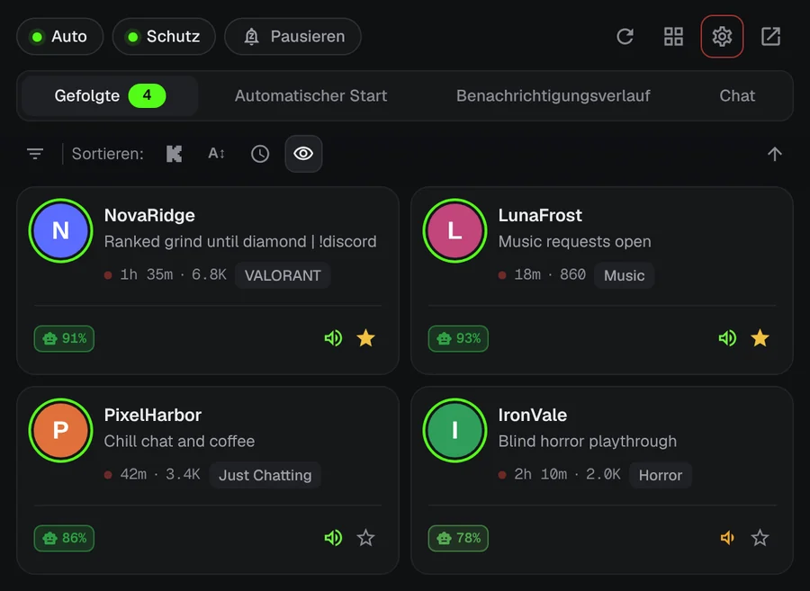
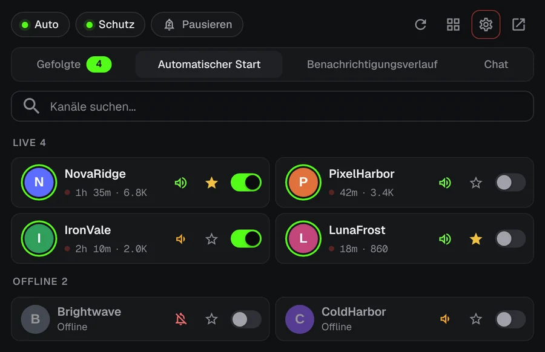
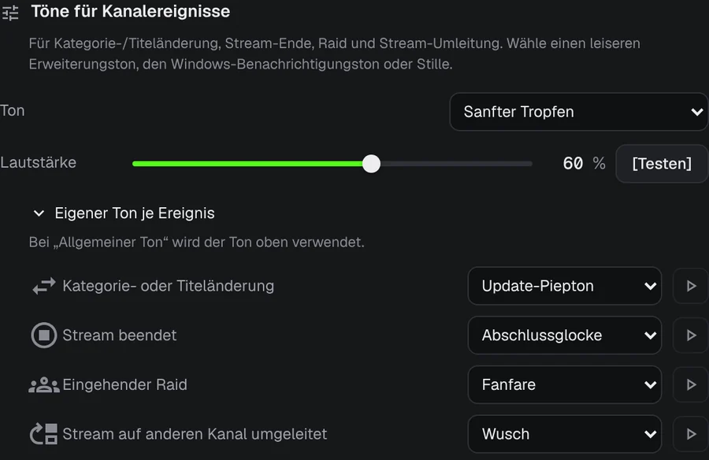
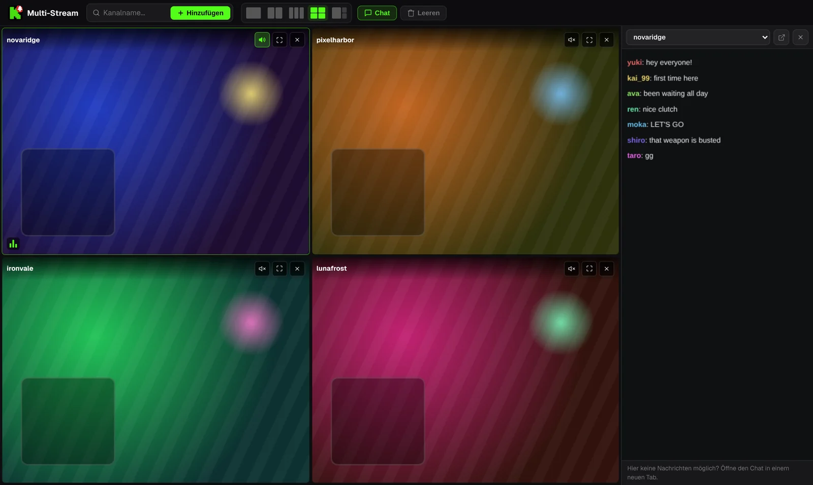

Verpasse nie wieder den Start eines Kick-Streams.
Dein Lieblingsstreamer geht um 3 Uhr nachts live. KickAlert schickt dir genau dann eine Desktop-Benachrichtigung, auch ohne geöffneten Kick-Tab. Kostenlos, ohne Kanal-Limit und ohne Tracking.
Edge und Opera folgen bald
 KickAlert
KickAlertProbier es aus. Drück auf eine Glocke.
Diese Kanäle sind offline. Schalte bei einem die Glocke ein und sieh, was passiert, wenn er live geht.
Sofort benachrichtigt
KickAlert nutzt Kicks Echtzeit-Verbindung, deshalb kommt die Meldung, sobald der Stream startet, nicht erst Minuten später. Wähle pro Kanal einen Ton, lege Zeiten für „Nicht stören“ fest oder pausiere alles bis zum Morgen.

Automatischer Start
Wähle die Kanäle, die sich von selbst öffnen sollen. Der Stream öffnet sich beim Start in einem neuen Tab, ohne doppelte Tabs, und der Tab kann sich schließen, wenn ein Raid den Stream woanders hinschickt.

Wissen, was passiert ist
Raids, Streamende, Kategoriewechsel und verschobene Streams können pro Kanal eine eigene Benachrichtigung und einen eigenen Ton bekommen.

Chat-Radar
Werde benachrichtigt, wenn dein Name oder ein Wort deiner Wahl in bis zu 5 Chats auftaucht, auch wenn Kick geschlossen ist. Chatfilter blenden Spam aus und erkennen Wörter, die mit ähnlich aussehenden Buchstaben geschrieben sind.
Bis zu vier Streams in einem Tab
Streams starten stumm. Mit einem Klick schaltest du den Ton für den gewünschten Stream ein. Der Chat liegt in einer Seitenleiste.

Streaminhalte sind beispielhaft.
Deine Daten bleiben in deinem Browser
- Keine Analyse, kein Tracking
- Kommuniziert nur mit kick.com
- Jede Berechtigung wird beim ersten Start erklärt
- Quellcode öffentlich auf GitHub
Fragen
Ist KickAlert kostenlos?
Ja. Alle Funktionen sind kostenlos, und du kannst beliebig vielen Kanälen folgen.
Muss Kick geöffnet bleiben?
Nein. KickAlert läuft im Hintergrund und benachrichtigt dich auch ohne geöffneten Kick-Tab. Du musst nur im selben Browser bei Kick angemeldet sein.
Ich habe es installiert, bekomme aber keine Benachrichtigungen.
Neue Installationen starten leise, damit du nicht überflutet wirst. Schalte die Glocke bei den gewünschten Kanälen ein oder in den Einstellungen für alle Kanäle auf einmal. Die Prüfung „Kommt von diesem Kanal eine Benachrichtigung?“ in den Einstellungen jedes Kanals zeigt, was sonst noch eine Meldung blockieren könnte.
In welchen Browsern funktioniert es?
Derzeit in Chrome und Firefox. Edge und Opera folgen bald. Brave, Vivaldi und andere Chromium-Browser können es aus dem Chrome Web Store installieren.
KickAlert installieren
Edge und Opera folgen bald